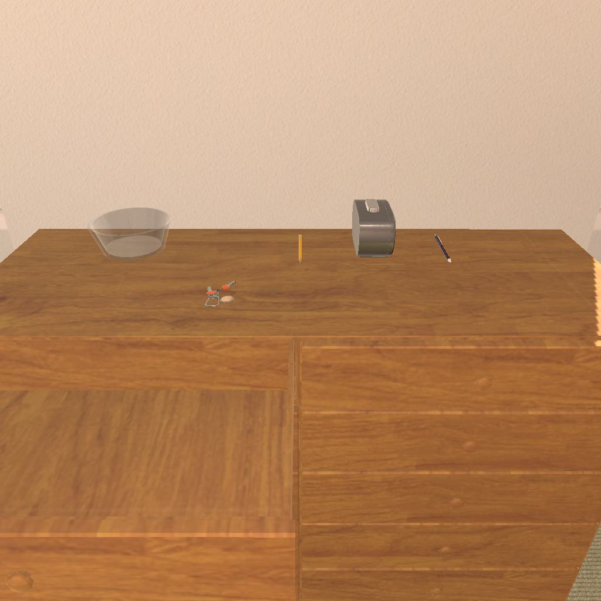

---------------------------------------------------------task: 0---------------------------------------------------------
--------------------------------------------------------------------------------------------------------------------------------------------------------------------
--------------------------------------------------------------------------------------------------------------------------------------------------------------------
Step:--------------------------------------------------------------------------10-------------------------------------------------------------------------------
----------------------------------------
VLM Prompt:
Image1:
Image2:
Image3:
**Instruction**
1. Analyze the provided images to identify all visible household objects and compare the difference between images (e.h. whether the object is opened or not and taken on hand or not), focusing on those relevant to the task description "look at alarmclock under the desklamp."
2. Use the analysis of images and the task hint "The agent must find an object of the desired type, locate and turn on a light source with the desired object in-hand." to answer the question: what is the most reasonable action in the choices for the task description "look at alarmclock under the desklamp"?
3. Decide and write the answer using the template: The answer is: (i): , where i is the real number. If there is no desired object in images, search every place based on **Initial Observation** to find the object. And if no one is exactly correct, choose a similar answer.
**Initial Observation**
You are in the middle of a room. Looking quickly around you, you can see bed (1), sidetable (1), drawer (1-11), dresser (1), safe (1), laundryhamper (1), garbagecan (1)
**Answer Choices**
(1): go to bed 1
(2): go to sidetable 1
(3): go to drawer 1
(4): go to dresser 1
(5): go to drawer 3
(6): go to drawer 4
(7): go to drawer 5
(8): go to drawer 6
(9): go to drawer 7
(10): go to drawer 8
(11): go to drawer 9
(12): go to drawer 10
(13): go to drawer 11
(14): go to safe 1
(15): go to laundryhamper 1
(16): go to garbagecan 1
(17): close drawer 2
(18): take bowl 1 from drawer 2
(19): take alarmclock 1 from drawer 2
(20): take keychain 1 from drawer 2
(21): take pen 1 from drawer 2
(22): take pencil 2 from drawer 2
**Answer**
Let's think step by step by following the instructions.
----------------------------------------
----------------------------------------
Original Response:
Firstly, we analyze the provided images to identify all visible household objects:
- Bowl 1: Visible in all images, placed on the desk, and not opened or taken in hand.
- Keychain 1: Visible in all images, placed on the desk, and not opened or taken in hand.
- Pencil 2: Visible in all images, placed on the desk, and not opened or taken in hand.
- Pen 1: Visible in all images, placed on the desk, and not opened or taken in hand.
- Alarmclock 1: Not visible in any image.
- Drawer 2: Visible in all images, it's opened in all images.
Now, based on the task description "look at alarmclock under the desklamp" and the task hint "The agent must find an object of the desired type, locate and turn on a light source with the desired object in-hand," let's deduce the most reasonable action from the choices provided.
The alarm clock is not visible on the desk, so it must be located elsewhere. According to the initial observation, the agent is in the middle of a room with various items, including drawers and a dresser. Since the task is to look at the alarm clock under the desk lamp, the agent must first locate the alarm clock.
The most logical place to look for the alarm clock would be in the drawer since that is a common place to store such items. Drawer 2 is already open, so there is no need to open it again.
Given the choices, the most reasonable action would be to take the alarm clock from drawer 2.
The answer is: (19): take alarmclock 1 from drawer 2.
----------------------------------------
----------------------------------------
>>> Refine Original VLM Response and Get Pure Action: take alarmclock 1 from drawer 2
----------------------------------------
-----------------------------------------------------------------
Running time: 15.42012095451355 seconds
Total Money: 0.37084999999999996
-----------------------------------------------------------------
-----------------------------------------------------------------
Text Observation:You pick up the alarmclock 1 from the drawer 2.
-----------------------------------------------------------------
UNSUCCEED